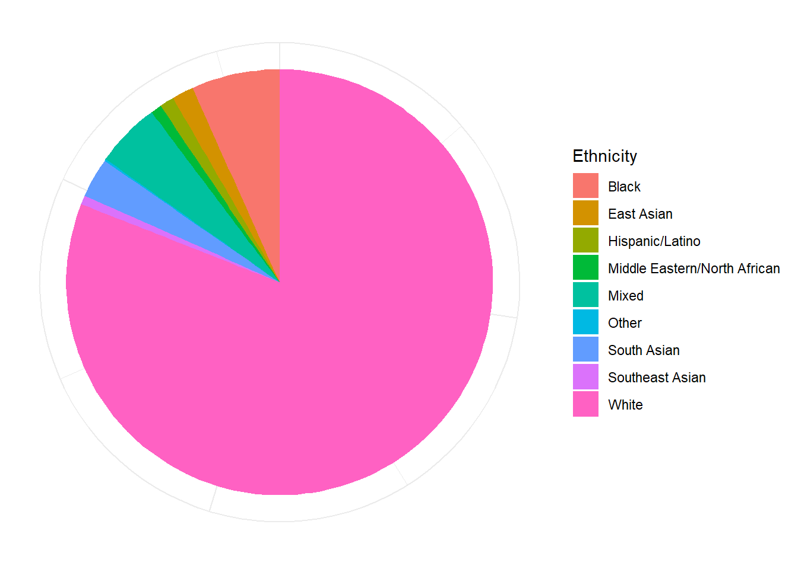
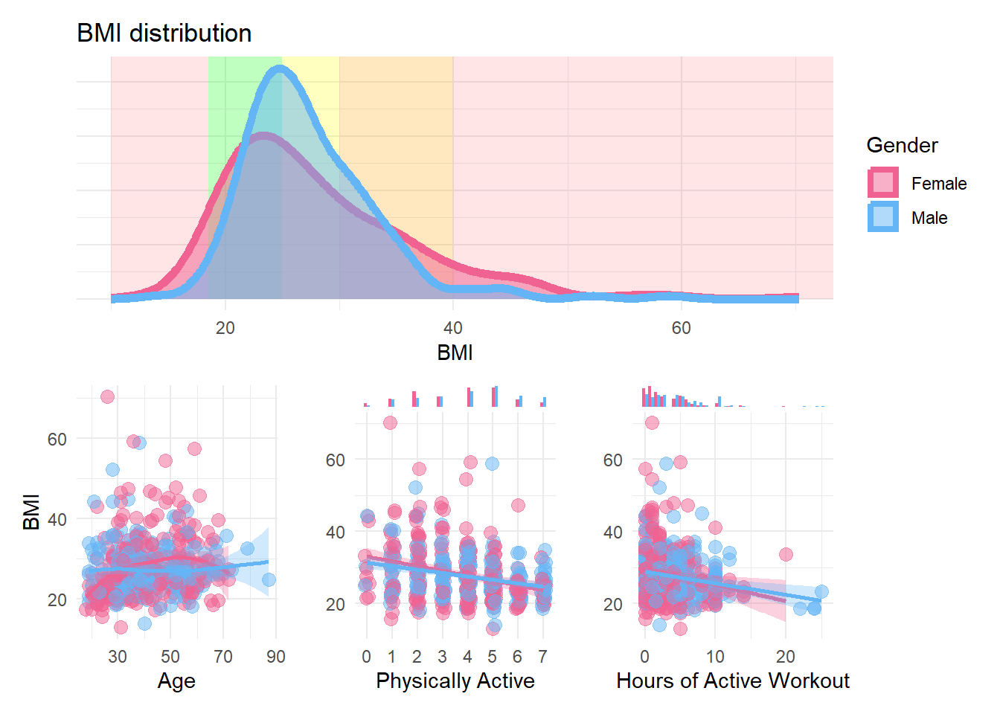
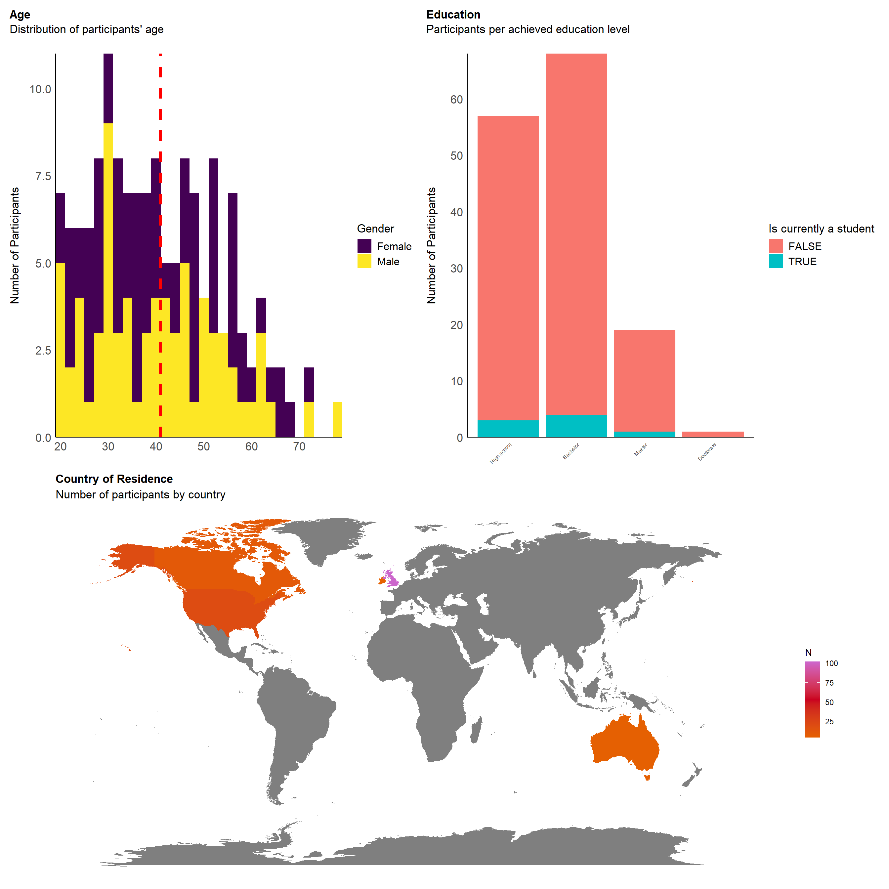

library(tidyverse)
library(easystats)
library(patchwork)
library(ggside)
library(ggdist)
df <- read.csv("../data/rawdata_participants.csv")Interoception Scale (Study 2) - Data Cleaning
Data Preparation
Feedback
Experiment Enjoyment
Code
df |>
summarise(n = n(), .by=c("Experiment_Enjoyment")) |>
filter(!is.na(Experiment_Enjoyment)) |>
mutate(n = n / sum(n),
Experiment_Enjoyment = fct_rev(as.factor(Experiment_Enjoyment))) |>
ggplot(aes(y = n, x = 1, fill = Experiment_Enjoyment)) +
geom_bar(stat="identity", position="stack") +
scale_fill_manual(values=c("green", "yellowgreen", "yellow", "orange", "red")) +
coord_flip() +
scale_x_continuous(expand=c(0, 0)) +
scale_y_continuous(labels = scales::percent) +
labs(title="Experiment Enjoyment",
subtitle="Proportion of participants by condition") +
guides(fill = guide_legend(reverse=TRUE)) +
theme_minimal() +
theme(
axis.title = element_blank(),
axis.text.y = element_blank(),
panel.grid.major.y = element_blank(),
panel.grid.minor.y = element_blank(),
legend.position = "top",
legend.title = element_blank()) 
Exclusions
Code
outliers <- list()Attention Checks
Code
dfchecks <- df |>
dplyr::mutate(
# "I can always accurately answer to the extreme left on this question to show that I am reading it"
A1 = ifelse(MINT_AttentionCheck_1 == 0, 0, 1),
# "I notice that I am being asked to respond all the way to the right"
A2 = ifelse(MAIA_AttentionCheck_1 == 6, 0, 1),
# "I can always accurately choose the lowest option"
A3 = ifelse(IAS_AttentionCheck_1 == 1, 0, 1),
# "Respond all the way to the right."
A4 = ifelse(BodyAwareness_AttentionCheck_1 == 5, 0, 1),
# "I am able to respond all the way to the left"
A5 = ifelse(TAS_AttentionCheck_1 == 1, 0, 1),
# "On the whole, I know I must press the highest option"
A6 = ifelse(PI18_AttentionCheck_1 == 5, 0, 1),
# "I feel that to show I'm being attentive I will press the lowest option"
A7 = ifelse(CEFSA_AttentionCheck_1 == 0, 0, 1),
.keep = "none"
)
dfchecks$Total <- rowSums(dfchecks)
dfchecks |>
mutate(Total = as.factor(paste0(Total, "/8"))) |>
ggplot(aes(x = Total)) +
geom_bar(aes(fill = Total)) +
scale_fill_viridis_d(guide = "none") +
labs(title = "Failed Attention Checks", y = "Number of Participants", subtitle = "Number of failed attention checks per participant") +
theme_modern(axis.title.space = 15) +
theme(
plot.title = element_text(size = rel(1.2), face = "bold", hjust = 0),
plot.subtitle = element_text(size = rel(1.2), vjust = 7),
axis.title.x = element_blank(),
)Code
outliers$attentionchecks <- df$Participant[dfchecks$Total >= 1]We removed 16 (14.81%) participants for having failed at least 1 attention check (out of 8).
Experiment Duration
Code
dfchecks$Duration <- df$Experiment_Duration
dfchecks$Outlier <- ifelse(dfchecks$Total >= 1, 1, 0)
dfchecks <- filter(dfchecks, Duration < 45)
m <- mgcv::gam(Outlier ~ s(Duration), data = dfchecks, family = "binomial")
estimate_relation(m, length=50) |>
ggplot(aes(x = Duration, y = Predicted)) +
geom_ribbon(aes(ymin = CI_low, ymax = CI_high), alpha = 0.2) +
geom_line() +
geom_vline(xintercept=5, linetype="dashed", color="red") +
theme_minimal() +
ggside::geom_xsidedensity(data=mutate(dfchecks,
Outlier=ifelse(Outlier==1, "Failed attention check", "Valid")),
aes(fill=Outlier), alpha=0.3) +
ggside::theme_ggside_void() +
labs(title = "Experiment Duration",
subtitle = "Predicted probability of failing attention checks by duration",
x = "Experiment Duration (minutes)",
y = "Probability of failing attention checks") 
Code
outliers$duration <- as.character(df[df$Experiment_Duration < 5, "Participant"])
outliers$duration <- outliers$duration[!outliers$duration %in% outliers$attentionchecks]We removed 0 (0.00%) participants for having completed the experiment in less than 5 minutes.
Multivariate Distance
Code
# Compute distance
dfoutlier <- performance::check_outliers(select(df, contains("MAIA_")),
method=c("optics"),
threshold=list(optics=2.5, optics_xi=0.03)) |>
as.data.frame() |>
mutate(Participant = fct_reorder(df$Participant, Distance_OPTICS),
Outlier_AttentionCheck = ifelse(Participant %in% outliers$attentionchecks, 1, 0),
Outlier_Duration = ifelse(Participant %in% outliers$duration, 1, 0),
Outlier = ifelse(Outlier_AttentionCheck == 1, "Failed Attention Checks", "Passed"),
Outlier = ifelse(Outlier == "Passed" & Outlier_Duration == 1, "Duration", Outlier))
outliers$distance <- as.character(dfoutlier[dfoutlier$Distance_OPTICS < 4, "Participant"])
outliers$distance <- outliers$distance[!outliers$distance %in% c(outliers$attentionchecks, outliers$duration)]
p1 <- dfoutlier |>
ggplot(aes(x=Participant, y=Distance_OPTICS)) +
geom_bar(aes(fill=Outlier), stat="identity") +
geom_hline(yintercept = 4, linetype="dashed", color="red") +
labs(fill = "Status") +
theme_minimal() +
theme(axis.text.x = element_blank(),
panel.grid.major.x = element_blank())
m <- mgcv::gam(Outlier_AttentionCheck ~ s(Distance_OPTICS), data = dfoutlier, family = "binomial")
# parameters::parameters(m)
p2 <- estimate_relation(m, length=30) |>
ggplot(aes(x=Distance_OPTICS, y=Predicted)) +
geom_ribbon(aes(ymin=CI_low, ymax=CI_high), alpha=0.2) +
geom_line() +
geom_vline(xintercept=4, linetype="dashed", color="red") +
theme_minimal()
p1 | p2
We removed 0 (0.00%) participants based on multivariate distance.
df <- filter(df, !Participant %in% c(outliers$attentionchecks, outliers$duration, outliers$distance))Imputation
Code
set.seed(3)
d <- datawizard::data_partition(df, proportion = 0.8)
m1 <- glm(MINT_InteroceptiveFailures_10 ~ .,
family = poisson(),
data = select(d$p_0.8, starts_with("MINT_"), -contains("AttentionCheck")))
m2 <- parsnip::rand_forest("regression", mtry = 10, trees = 2000) |>
fit(MINT_InteroceptiveFailures_10 ~ ., data = select(d$p_0.8, starts_with("MINT_"), -contains("AttentionCheck")))
m3 <- parsnip::mlp(mode="regression") |>
fit(MINT_InteroceptiveFailures_10 ~ ., data = select(d$p_0.8, starts_with("MINT_"), -contains("AttentionCheck")))
# m4 <- parsnip::bart(mode="regression") |>
# fit(MINT_InteroceptiveFailures_10 ~ ., data = select(d$p_0.8, starts_with("MINT_"), -contains("AttentionCheck")))
library(baguette)
m5 <- parsnip::bag_mlp(mode="regression") |>
fit(MINT_InteroceptiveFailures_10 ~ ., data = select(d$p_0.8, starts_with("MINT_"), -contains("AttentionCheck")))
# glmmTMB::glmmTMB(MINT_InteroceptiveFailures_10 ~ .,
# family = poisson(),
# ziformula=~1,
# data = select(df, starts_with("MINT_"), -contains("AttentionCheck")))
parsnip::glance(m5)
parsnip::tidy(m5)
results <- data.frame(
TrueScore = d$test$MINT_InteroceptiveFailures_10,
# Poisson = predict(m1, d$test),
RandomForest = predict(m2, d$test)$.pred,
MLP = predict(m3, d$test)$.pred,
BagMLP = predict(m5, d$test)$.pred
) |>
pivot_longer(-TrueScore)
results |>
ggplot(aes(x=TrueScore, y=value, color=name)) +
geom_abline(slope=1) +
geom_point()
# Compute R^2
SS_res <- sum((df$TrueScore - df$PredictedScore)^2)
SS_tot <- sum((df$TrueScore - mean(df$TrueScore))^2)
R2 <- 1 - (SS_res / SS_tot)
results |>
summarize(RMSE = sqrt(mean((TrueScore - value)^2)),
SS_res = sum((TrueScore - value)^2),
SS_tot = sum((TrueScore - mean(value))^2),
R2 = 1 - (SS_res / SS_tot),
.by="name")
# Compute R2Final Sample
The final sample includes 92 participants (Mean age = 40.2, SD = 14.6, range: [19, 79]; Gender: 51.1% women, 48.9% men, 0.00% non-binary; Education: Bachelor, 46.74%; Doctorate, 1.09%; High school, 40.22%; Master, 11.96%; Country: 68.48% United Kingdom, 15.22% United States, 16.30% other).
Code
p_age <- df |>
ggplot(aes(x = Age, fill = Gender)) +
geom_histogram(data=df, aes(x = Age, fill=Gender), binwidth = 2) +
geom_vline(xintercept = mean(df$Age), color = "red", linewidth=1.5, linetype="dashed") +
scale_fill_viridis_d() +
scale_x_continuous(expand = c(0, 0), breaks = seq(20, max(df$Age), by = 10 )) +
scale_y_continuous(expand = c(0, 0)) +
labs(title = "Age", y = "Number of Participants", color = NULL, subtitle = "Distribution of participants' age") +
theme_modern(axis.title.space = 10) +
theme(
plot.title = element_text(size = rel(1.2), face = "bold", hjust = 0),
plot.subtitle = element_text(size = rel(1.2), vjust = 7),
axis.text.y = element_text(size = rel(1.1)),
axis.text.x = element_text(size = rel(1.1)),
axis.title.x = element_blank()
)
p_age
Code
p_edu <- df |>
mutate(Student = ifelse(is.na(Student), FALSE, Student),
Education = fct_relevel(Education, "High school", "Bachelor", "Master", "Doctorate")) |>
ggplot(aes(x = Education)) +
geom_bar(aes(fill = Student)) +
scale_y_continuous(expand = c(0, 0), breaks= scales::pretty_breaks()) +
labs(title = "Education", y = "Number of Participants", subtitle = "Participants per achieved education level", fill = "Is currently a student") +
theme_modern(axis.title.space = 15) +
theme(
plot.title = element_text(size = rel(1.2), face = "bold", hjust = 0),
plot.subtitle = element_text(size = rel(1.2), vjust = 7),
axis.text.y = element_text(size = rel(1.1)),
axis.text.x = element_text(size = rel(0.5), angle = 45, hjust =1),
axis.title.x = element_blank()
)
p_edu
Code
p_eth <- df |>
filter(!is.na(Ethnicity)) |>
ggplot(aes(x = "", fill = Ethnicity)) +
geom_bar() +
coord_polar("y") +
theme_minimal() +
theme(
axis.text.x = element_blank(),
axis.title.x = element_blank(),
axis.text.y = element_blank(),
axis.title.y = element_blank()
)
p_eth
Code
p_map <- df |>
mutate(Country = case_when(
Country=="United States"~ "USA",
Country=="United Kingdom" ~ "UK",
TRUE ~ Country
))|>
dplyr::select(region = Country) |>
group_by(region) |>
summarize(n = n()) |>
right_join(map_data("world"), by = "region") |>
# mutate(n = replace_na(n, 0)) |>
ggplot(aes(long, lat, group = group)) +
geom_polygon(aes(fill = n)) +
scale_fill_gradientn(colors = c("#E66101", "#ca0020", "#cc66cc")) +
labs(fill = "N") +
theme_void() +
labs(title = "Country of Residence", subtitle = "Number of participants by country") +
theme(
plot.title = element_text(size = rel(1.2), face = "bold", hjust = 0),
plot.subtitle = element_text(size = rel(1.2))
)
p_map
Code
sort(table(df$Country)) |>
as.data.frame() |>
rename(Country = Var1) |>
arrange(desc(Freq)) |>
gt::gt()| Country | Freq |
|---|---|
| United Kingdom | 63 |
| United States | 14 |
| Australia | 5 |
| Canada | 5 |
| Ireland | 3 |
Code
df |>
ggplot(aes(x=BMI)) +
annotate("rect", xmin=10, xmax=18.5, ymin=0, ymax=Inf, fill="red", alpha=0.1) +
annotate("rect", xmin=18.5, xmax=25, ymin=0, ymax=Inf, fill="green", alpha=0.1) +
annotate("rect", xmin=25, xmax=30, ymin=0, ymax=Inf, fill="yellow", alpha=0.1) +
annotate("rect", xmin=30, xmax=40, ymin=0, ymax=Inf, fill="orange", alpha=0.1) +
annotate("rect", xmin=40, xmax=Inf, ymin=0, ymax=Inf, fill="red", alpha=0.1) +
geom_density(aes(color=Gender, fill=Gender), alpha=0.3, linewidth=1) +
labs(title = "BMI distribution") +
theme_minimal() +
theme(axis.title.y = element_blank(),
axis.text.y = element_blank())Code
df |>
ggplot(aes(x=Age, y=BMI, color=Gender)) +
geom_point() +
geom_smooth(aes(fill=Gender), alpha=0.3, method = 'loess', formula = 'y ~ x') +
labs(title = "BMI and Age") +
theme_minimal() Code
df$Disorders_Psychiatric_Mood <- ifelse(str_detect(df$Disorders_Psychiatric, "MDD|GAD|Bipolar"), TRUE, FALSE)
df$Disorders_Psychiatric_MoodTreatment <- ifelse(
df$Disorders_Psychiatric_Mood & !is.na(df$Disorders_PsychiatricTreatment) & str_detect(df$Disorders_PsychiatricTreatment, "Mood|Antidepressant|Anxiolytic|Psychotherapy"), TRUE, FALSE)
# df$Disorders_Psychiatric_Other <- ifelse(str_detect(df$Disorders_Psychiatric, "MDD|GAD|Bipolar"), TRUE, FALSE)
p1 <- select(df, Participant, Gender, Disorders_Psychiatric_Mood, Disorders_Psychiatric_MoodTreatment) |>
pivot_longer(cols = starts_with("Disorders_"), names_to = "Disorder", values_to = "Value") |>
mutate(Disorder = str_remove_all(Disorder, fixed("Disorders_Psychiatric_")),
Disorder = str_replace(Disorder, "MoodTreatment", "Mood Disorder (with treatment)"),
Disorder = str_replace(Disorder, "Mood$", "Mood Disorder")) |>
summarize(N = sum(Value) / nrow(df), .by=c("Gender", "Disorder")) |>
mutate(N_tot = sum(N), .by="Disorder") |>
mutate(Disorder = fct_reorder(Disorder, desc(N_tot))) |>
ggplot(aes(x = Disorder, y = N, fill=Gender)) +
geom_bar(stat = "identity") +
scale_fill_manual(values = c("Male"= "#64B5F6", "Female"= "#F06292", "Other"="orange", "Missing"="brown")) +
scale_y_continuous(expand = c(0, 0), labels=scales::percent) +
labs(title = "Mood Disorders", y = "Number of Participants", subtitle = "Participants per self-declared mood disorder", x="Type") +
theme(axis.text.x = element_text(angle = 45, hjust = 1)) +
theme_minimal()
df$Disorders_Somatic_Number <- ifelse(df$Disorders_Somatic == "", 0, str_count(df$Disorders_Somatic, ";")+1)
p2 <- df |>
ggplot(aes(x = Disorders_Somatic_Number, fill=Gender)) +
geom_bar() +
scale_fill_manual(values = c("Male"= "#64B5F6", "Female"= "#F06292", "Other"="orange", "Missing"="brown")) +
scale_x_continuous(breaks = c(0:10)) +
scale_y_continuous(expand = c(0, 0)) +
labs(title = "Somatic Issues", y = "Number of Participants", subtitle = "Participants per somatic issues", x="Type") +
theme(axis.text.x = element_text(angle = 45, hjust = 1)) +
theme_minimal()
p1 / p2
Code
(p_age | p_edu) / p_map
Save
Code
df |>
select(-contains("AttentionCheck")) |>
write.csv("../data/data_participants.csv", row.names = FALSE)
Comments
Code